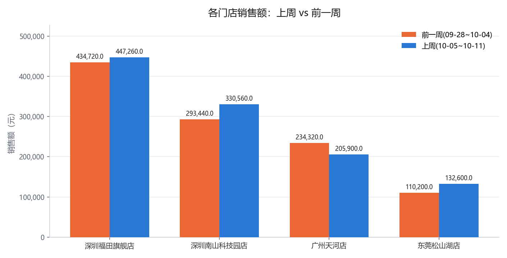
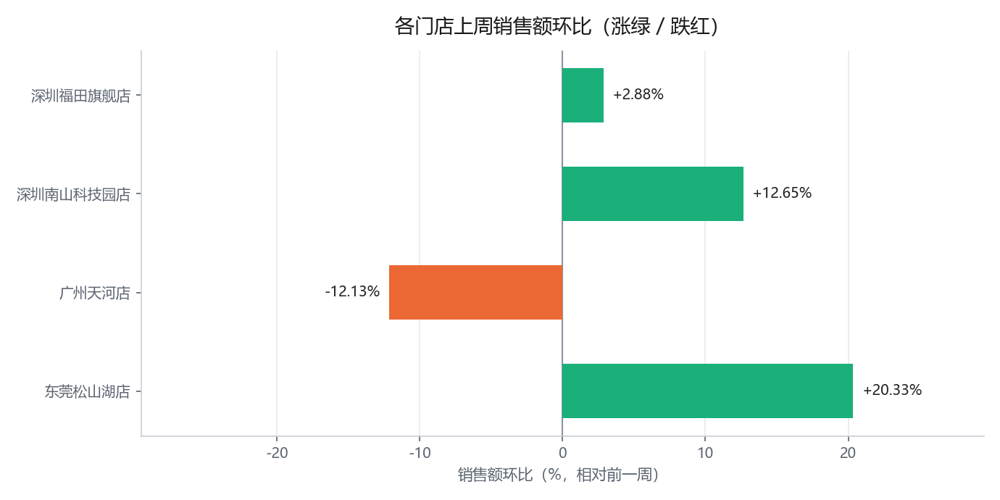

这个痛点，是不是你
痛点卡 · 办公-01 销售日报自动生成
案例来源：《100 个 WorkBuddy+ 应用案例合集》第一章「一、自动化办公类案例」案例 1：自动生成销售日报
复刻日期：2026-10-12
一、痛点原句（引用手册原文）
手册出处： 案例 1
提示词：
生成上周销售日报
执行效果： WorkBuddy 自动从本地 Excel 或企业微信表格中提取数据，调用内置报表模板生成 PDF 并发送至指定群组。
提取说明： 手册此处只有「一句提示词 + 一句执行效果」，没有第二人称的痛点导入，也没有写"以前要折腾多久"的代价句。按《子Agent执行规范》第〇补节，痛点提取的三个位置（章首导入 / 案例引入 / 章末收束）在本案例均缺位。因此本卡的痛点主体为 【补全】，仅"提示词要解决什么任务 + 执行效果"部分引自原文。
二、痛点主体（【补全】）
谁： 连锁零售"华南大区"的区域运营 / 销售支持岗（本案例取"每周一早上要给大区群发上周销售日报的运营专员"）。
真实的周一早会场景： 周一 8:30 早会前，日报必须已经躺在企业微信大区群里。而要凑出这份日报，得先把下面这一串手工做完：
| 步骤 | 手工做法 | 代价 |
|---|---|---|
| 1. 取数 | 打开各门店/各系统导出的销售流水表，找到"上周"那 7 天的行 | 表里混着好几周的数据，靠肉眼框选 |
| 2. 算汇总 | 逐个 SUM 出上周销售额、订单数、客单价 | 区域框错一次，整份日报全歪 |
| 3. 算环比 | 再把"前一周"的数字翻出来，一个个算 (本周−前一周)/前一周 | 最容易漏、最容易算反方向 |
| 4. 套模板 | 把数字填进上周那份日报模板，改标题日期 | 每次都要手工改，改漏一处就发错周期 |
| 5. 导 PDF | 另存为 PDF，检查有没有串页 | 格式一动又要重导 |
| 6. 发群 | 打开企业微信，找到大区群，发文件 + 配一句话 | 早会前手忙脚乱 |
旧做法的代价： 整套走完 30–40 分钟，而且 每周一重来一次；更糟的是——手工链条上任何一环出错（框选周次框错、环比减反方向、模板日期没改），日报看起来完全正常，但数字是错的，而且已经发到群里了。发出去的错数字比没发更危险。
想要的目标： 把销售流水表丢进去，直接拿到 ① 一份《上周销售日报》（关键指标 + 环比 + 门店明细表） ② 可直接发群的 PDF。不是"学会做报表/学 Excel 公式"，是"周一早会前这份日报已经准备好了"。
【补全】为什么值得解决： 这件事的真实价值在"按时、准确地出现"，不在"会做表"。手工环节吃掉的是周一早上最紧张的那段时间，留下的是"发错了才发现"的风险。把"取数—汇总—算环比—套模板—导 PDF"这条链路交给 Agent，人只需要在发之前看一眼数字对不对。而且这条链路一旦固化，下周换一份流水表重跑即可，边际成本趋近于零——这才是"每周重复"这个痛点的真正解药。
三、价值归类
目标导向 ✅
要解决的是"周一早会前必须交付一份可核对、带环比的销售日报"这个业务目标。 反面想想就清楚——如果只做成"教你用 Excel 算环比、套模板"，那是工具理性，本卡不通过。
四、本案例的"人工易错点"（复刻时特意做进素材，用来验证痛点是真的）
复刻时我把下面几条做进了输入素材与报告口径，让"手工会很痛"变成可验证的事实：
- 源表混含两周数据（前一周 09-28~10-04 + 上周 10-05~10-11），取数时必须按周切分，框错就串周。
- 环比方向：天河店是下降（−12.13%），其余三家上升——环比符号最容易写反。报告里对下降项必须显式标负号。
- 客单价口径陷阱：大区综合客单价必须加权（大区销售额 ÷ 大区订单数 = 311.56 元），不能对四家店客单价取简单平均（那样会得到 297.50 元，差 14 元）。
- "整体客单价降了、但每家店都没降"：本周大区客单价 311.56 vs 前一周 313.65（−0.67%），而四家店各自的客单价都没变——下降纯粹是"低客单价的松山湖店占比上升"造成的结构效应。只看总数会得出"客单价在跌"的错误结论。
第 3、4 条是最阴险的：两种算法都"看起来对"，但差出来的数字会直接改变"大区是涨是跌"的判断。复刻产物里对这两点做了显式标注。
AI 是怎么解决的
产物 · 在线预览



